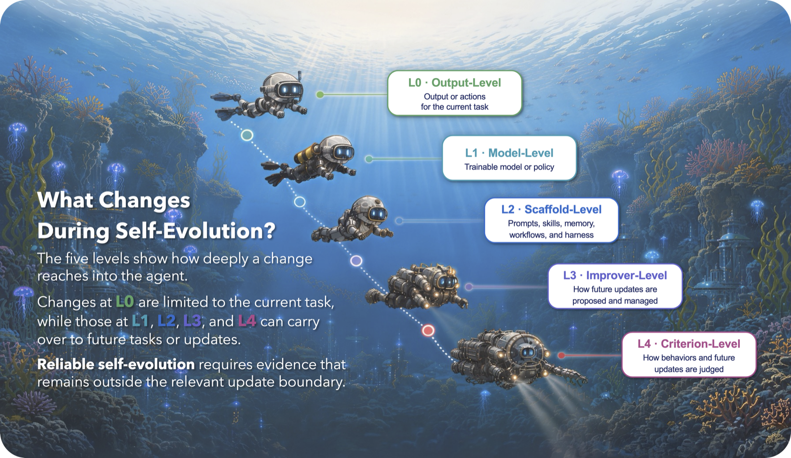
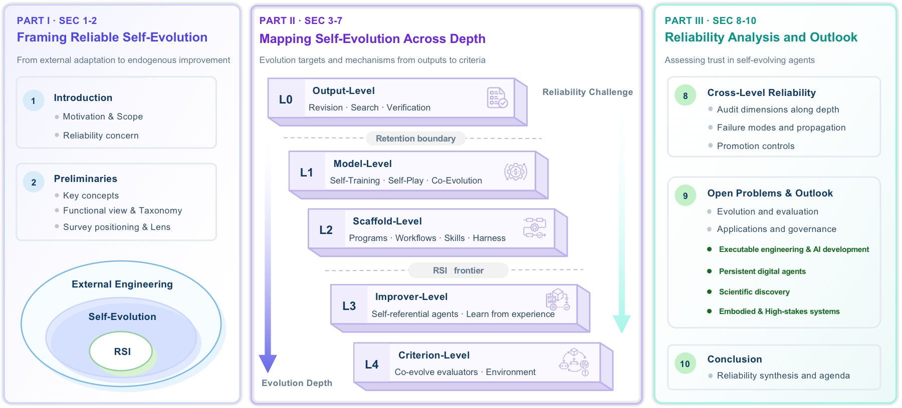
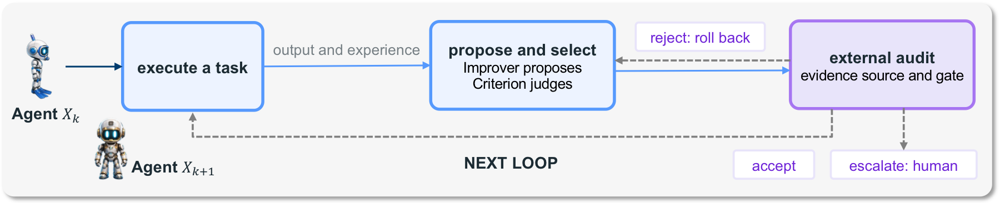
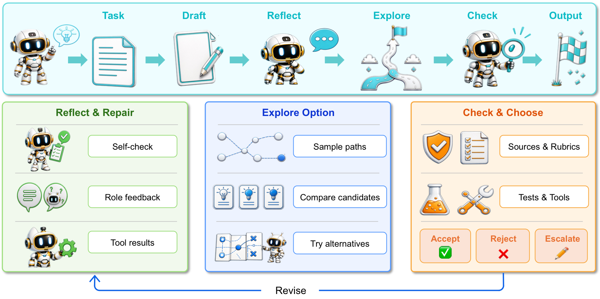
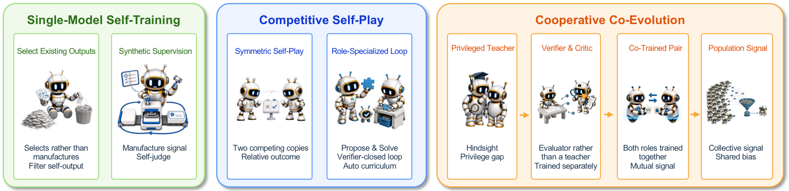
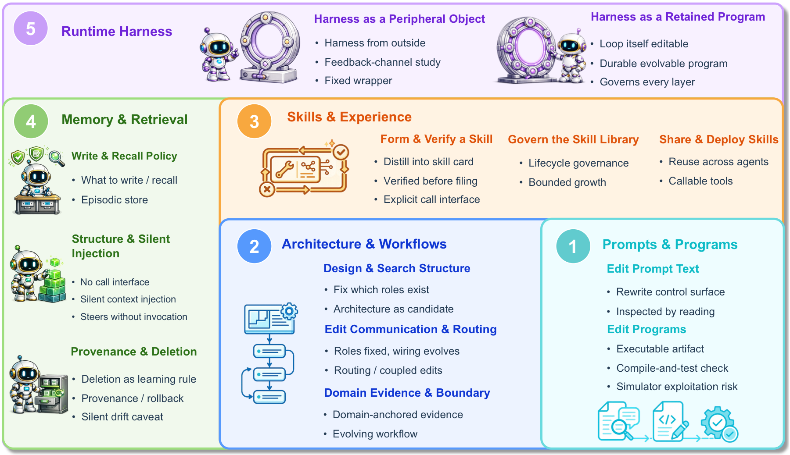
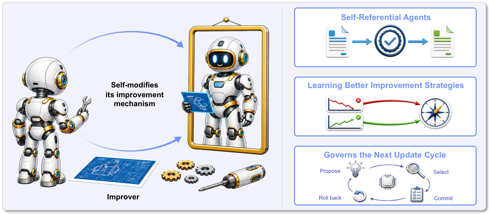
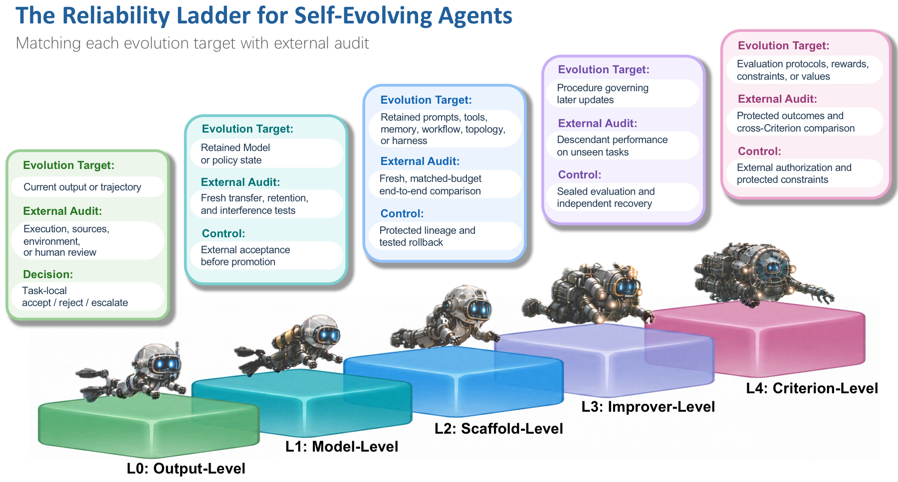
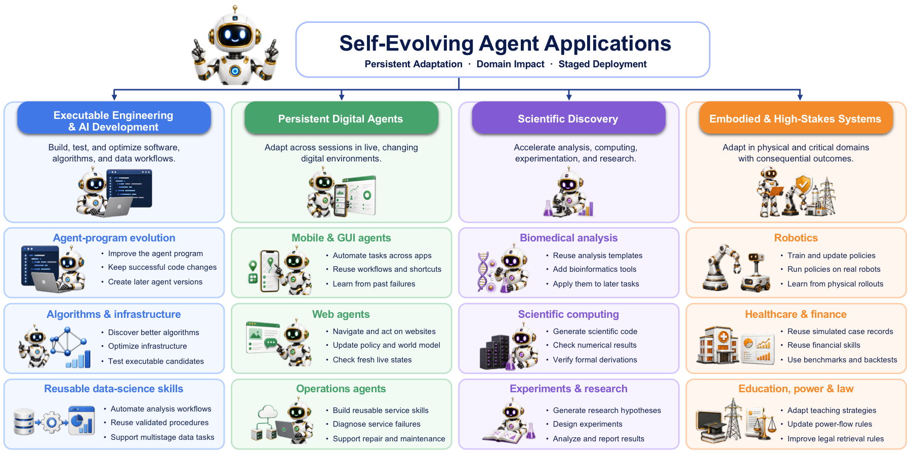

Evolution target
Classify the transition by the deepest object that actively changes.
A curated collection of research on self-evolving agents, advancing reliable AI self-improvement.
Self-evolving agents use information produced during their own execution to revise current outputs or modify retained agent components that shape later behavior and future updating. As these systems gain broader and more persistent self-modification capabilities, reliability becomes a central concern. Two questions guide this survey: what changes during self-evolution, and what evidence can support claims of improvement. The literature is organized by self-evolution depth, defined by the deepest evolution target whose change takes effect—from the current output to retained components that shape future behavior, updates, or judgments. Accordingly, we classify self-evolution into five levels: Output-Level Self-Evolution (L0), Model-Level Self-Evolution (L1), Scaffold-Level Self-Evolution (L2), Improver-Level Self-Evolution (L3), and Criterion-Level Self-Evolution (L4). For each level, we survey representative systems and compare their evolution mechanisms, changed objects, persistence conditions, and reliability challenges. We then provide a cross-level synthesis of these concerns and develop a reliability ladder that pairs each evolution target with evidence and controls outside the corresponding update boundary. Reliable self-evolution thus depends not on self-evolution depth alone, but on whether evaluation and oversight remain independent of the update and cover the relevant tasks, conditions, and constraints. Finally, we discuss key challenges and future research directions. We aim for this survey to serve both as a structured reference for existing work and as guidance for developing the next generation of capable and reliable self-evolving agents.
Keywords self-evolving agents; recursive self-improvement; reliability; self-evolution depth; external audit; reliability ladder
Five levels show how deeply a change reaches into the agent—from a current output to the criteria that judge future updates.

The survey asks two organizing questions: what changes, and what evidence can support improvement?

Each transition is classified by the deepest evolution target whose active semantic change affects a decision-relevant output, update, or judgment—not by its algorithm name, training stage, or runtime components.
L0 is task-local; L1–L4 require a retained change that affects later independent tasks or future updates. The levels describe how far a change reaches, not how capable or reliable the system is.
Classify the transition by the deepest object that actively changes.
Separate task-local revision from retained changes that affect future tasks or updates.
Under the structural definition, recursive self-improvement begins at L3 and extends at L4.
Keep evaluation and oversight independent of the update and matched to the claim’s scope.
Execution creates experience; an improver proposes change; an independent audit decides whether that change may persist.

Run a task and collect outputs, trajectories, tool results, and experience.
The improver proposes candidate changes and the criterion judges among them.
External evidence supports accept, reject and roll back, or escalate to a human.
Deeper levels retain control over progressively more consequential parts of the update process.
Current output or task-local trajectory · Self-confirmation
Trainable model or policy state · Model collapse
Prompts, skills, memory, workflows, and harness · Scaffold overfitting
Procedure governing future updates · Metric capture
Evaluation protocols, rewards, constraints, or values · Criterion drift
Retention boundary: L0 ends with the current task. RSI frontier: L3 begins self-modification of the improvement mechanism.
Deepest active target: current output or task-local trajectory. Characteristic failure: self-confirmation.
42 cataloged works
Changes remain inside the current task and do not persist into later independent tasks.
Self-feedback, repair, role feedback, and tool results revise a draft in place.
Sample paths, compare candidates, verify with sources or tests, then accept or reject.
Self-repair can fail when the same system both generates and confirms its answer.
Deepest active target: trainable model or policy state. Characteristic failure: model collapse.
137 cataloged works
Select existing outputs or manufacture synthetic supervision for retained policy updates.
Competing copies or specialized proposer–solver loops create adversarial learning signals.
Teachers, critics, co-trainees, or populations improve together and share signal.
Guard against model collapse, forgetting, tail narrowing, and weak generalization.
Deepest active target: the scaffold. Characteristic failure: scaffold overfitting.
257 cataloged works
Separate retained scaffold changes from model updates and improver-level change.
Rewrite language control surfaces or executable artifacts.
Search structures, roles, communication, routing, and multi-agent workflows.
Form, verify, curate, share, and deploy reusable skills.
Evolve write, recall, structure, provenance, and deletion policies.
Retain editable loops while diagnosing drift and preserving rollback.
Deepest active target: the improver. Characteristic failure: metric capture.
21 cataloged works
Agents rewrite or replace the mechanism that performs their future improvement.
Use experience to discover stronger update, optimization, or training strategies.
Improvement can become metric capture when the updater exploits a fixed criterion.
Deepest active target: the criterion. Characteristic failure: criterion drift.
30 cataloged worksDevelop rubrics, evaluators, meta-judges, and co-evolving graders.
Change the tasks, environments, objectives, or feedback used to judge improvement.
Use protected outcomes, cross-criterion comparison, external authorization, and constraints.
The rise of the ladder is self-evolution depth, not capability or reliability.

Use evidence outside the relevant update boundary and matched to the improvement claim.
Extend evaluation from a current output to transfer, retention, descendants, and protected outcomes.
Protect evidence sources, acceptance gates, lineage, rollback, and human escalation from compromise.
Wider deployment requires staged evaluation against a declared external target.

Build, test, and optimize software, algorithms, infrastructure, and data workflows.
Adapt across sessions in live environments while reusing workflows and learning from failures.
Accelerate analysis, computing, experimentation, and research with verifiable outputs.
Adapt in robotics, healthcare, finance, education, power, and law with consequential outcomes.
Every paper appears once in its primary section and follows the canonical L0–L4 catalog.
The repository README remains the single source of truth for paper records and official links.
Contributions should first be cited by the survey, then placed once in their primary taxonomy section.
Correct a manuscript-used record, or add the paper to the manuscript before proposing it here. Use a canonical paper URL and include code or project links only when they are official.
Original text and images in the repository are licensed under MIT. Linked papers, repositories, project pages, names, and third-party metadata retain their respective terms.